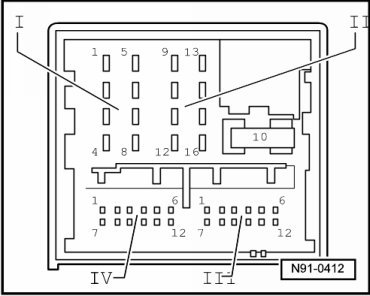
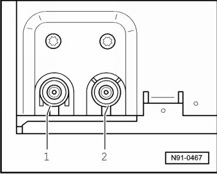

Multi-Pin Connectors 1, 2, 3 and 4 Overview
Multi-Pin Connectors 1, 2, 3 and 4 Overview
--> [ 8-Pin Multi-Pin Harness Connector 1, Loudspeaker Outputs ]
--> [ 8-Pin Connector 2, Voltage Supply, CAN-Bus, Telephone Muting ]
--> [ Multi-Pin Connector 3, 12-Pin, Line-Out Audio Signals and Telephone
Audio Input Signals ]
--> [ Multi-Pin Connector 4, 12-Pin, CD Changer Control ]
--> [ Multi-Pin Connector 5, Antenna Connector ]
--> [ Multi-Pin Connector 6, Antenna Connector ]
8-Pin Multi-Pin Harness Connector 1, Loudspeaker Outputs

• If the radio unit is the vehicle is equipped with the "Sound 1" sound system, then these speaker outputs are used as input signals for the sound system amplifier.
1 Right rear loudspeaker, plus
2 Right front loudspeaker, plus
3 Left front loudspeaker, plus
4 Left rear loudspeaker, plus
5 Right rear loudspeaker, minus
6 Right front loudspeaker, minus
7 Left front loudspeaker, minus
8 Left rear loudspeaker, minus
8-Pin Connector 2, Voltage Supply, CAN-Bus, Telephone Muting
9 CAN-Bus, plus
10 CAN-Bus, minus
11 Telephone muting
12 Voltage supply, negative, terminal 31
13 Radio ON, positive control wire
14 Alarm contact
15 Voltage supply, positive, terminal 30
16 Anti-theft system control signal, SAFE, terminal 30
Multi-Pin Connector 3, 12-Pin, Line-Out Audio Signals and Telephone Audio Input Signals
- 15 not used
6 Telephone audio input signal, negative
-711 not used
12 Telephone audio input signal, positive
Multi-Pin Connector 4, 12-Pin, CD Changer Control
1 Headphone audio signal output, right, positive
2 CD changer, left and right port, negative
3 Headphones audio signal output, ground
4 CD changer, voltage supply, positive, terminal 30
5 Headphone audio signal output, left, positive
6 CD changer, DATA OUT (data exchange for CD changer control from radio unit to CD changer)
7 not used
8 CD changer, left port, positive
9 CD changer, right port, positive
10 CD Changer, control signal
11 CD changer, DATA IN (data exchange for CD changer control from radio unit to CD changer)
12 CD changer, CLOCK (internal test protocol for monitoring data flow)
Multi-Pin Connector 5, Antenna Connector

2 Antenna output signal brown connection to antenna selection control module
Antenna signal input via connection 1 is tested in radio and result is output via connection 2 to antenna selection control module. Function is switched to another antenna when antenna signal is determined to be weak (diversity). This procedure is not audible to the customer.
Multi-Pin Connector 6, Antenna Connector
1 Transparent color connection for antenna output signal from antenna selection control module
Antenna signal input via connection 1 is tested in radio and result is output via connection 2 to antenna selection control module. Function is switched to another antenna when antenna signal is determined to be weak (diversity). This procedure is not audible to the customer.